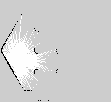
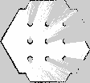

Build, save and reload a mobile robot map
Start with a single vantage point, collect scans from three navigation legs and save two different mapping artifacts. Then start a fresh map server and verify that it can load the same grid.
Read two grids from the same robot


These are measured trinary grids from the TurtleBot3 sandbox, at 0.05 m per cell. The black cells are occupied, white cells are free and grey cells are unknown. Locate a newly visible obstacle and an unknown shadow still behind it. Estimate the final grid extent from its resolution and dimensions. Use origin and resolution to compare positions between exports, since the bounding box shifted. Nav2 minimal TurtleBot3 simulation · Apache 2.0.
Run SLAM and gather geometry
Use the isolated Jazzy simulator from P141 with SLAM Toolbox installed. Close any earlier sandbox first. Launch from a sourced terminal, then use a second terminal for the commands below. SLAM Toolbox supplies map → odom in this run. Verify the map frame and observed cells before choosing goal coordinates. The commands use the default sandbox and headless rendering. You can use RViz for visualization on a graphical installation.
ros2 launch nav2_bringup tb3_simulation_launch.py slam:=True \
headless:=True use_rviz:=False use_composition:=False gz_args:=--headless-renderingros2 topic info /map --verbose
ros2 topic echo /map --qos-durability transient_local --qos-reliability reliable --once --field info
ros2 run tf2_ros tf2_echo map base_link
ros2 lifecycle get /bt_navigatorWhen the navigator is active and your map confirms the goal lies in free space, send this first goal. The measured run continued to (1.05, 0.60) m facing +90° using quaternion {z: 0.7071, w: 0.7071}, then returned to (0, 0) m facing +x. Wait for the outcome of each goal before sending another. Check obstacle coverage and orientation after each leg. The return alone gives no proof of loop closure. Look for an accepted loop constraint and a corresponding graph update before reporting one.
ros2 action send_goal /navigate_to_pose nav2_msgs/action/NavigateToPose \
'{pose: {header: {frame_id: map}, pose: {position: {x: 1.05, y: 0.0}, orientation: {w: 1.0}}}}'All three actions succeeded in the measured run. The estimate when the return goal began was about (1.35, 0.53) m, about 0.31 m from the previous target. That message arrived after the earlier result. Measure final pose at a defined time and check an independent reference when placement accuracy matters.
SLAM Toolbox matches new scans using the transform and previous geometry. A pose graph can represent successive views along with constraints from revisits. A wrongly matched revisit in a repeated aisle can distort the map. Compare stable landmarks, wall alignment and repeated approaches before using the map for deployment. SLAM Toolbox · Mapping and services.
Save and restore the two kinds of map data
Capture a grid at the start and after the route. Run the same map saver command with different prefixes for the two exports. The image and YAML metadata are a pair. The serialized graph and data pair is for continuing mapping or graph-based localization. The image has no stored sequence of laser observations or graph constraints.
ros2 run nav2_map_server map_saver_cli -f survey --fmt png \
--ros-args -p map_subscribe_transient_local:=true
ros2 service call /slam_toolbox/serialize_map slam_toolbox/srv/SerializePoseGraph \
"{filename: '$PWD/survey'}"Check the map saver result and the graph service response. A successful graph save returns result: 0. Confirm that both survey.posegraph and survey.data exist before archiving them. For restoring the grid, use your output or download the survey PNG and its matching YAML into the same folder. Keep their names paired.

Stop the mapping simulation and use an isolated ROS session with no other map publisher. Start a fresh map server from the directory containing your export. With the course download, substitute ros-slam-return.yaml for survey.yaml. In the observer terminal, configure and activate the new lifecycle node, and read the metadata via a transient-local subscription.
ros2 run nav2_map_server map_server --ros-args -p yaml_filename:="$PWD/survey.yaml"ros2 lifecycle set /map_server configure
ros2 lifecycle set /map_server activate
ros2 topic echo /map --qos-durability transient_local --qos-reliability reliable --once --field infoCheck the export and reuse evidence
The final grid extents are 5.60 m × 5.15 m, including unknown cells. The fresh map server should publish 0.05 m resolution, 112 columns, 103 rows and origin approximately (−0.953, −2.074) m when using the provided pair. That proves the grid loads and is available to a late subscriber. Localization and route clearance still need their own tests with the restored map. Nav2 · Map saver.